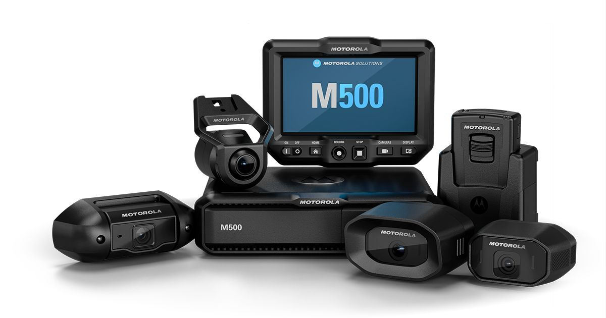
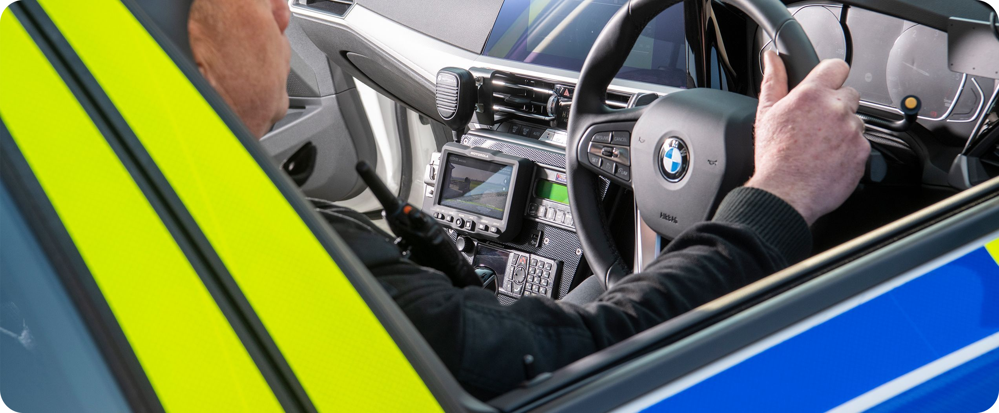
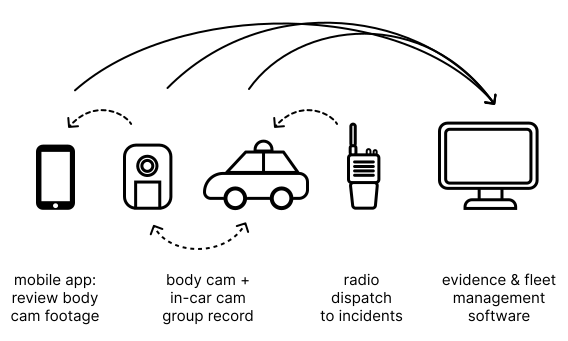

Designing for Split-Second Decisions - In-Car Video System

CONTEXT
I led UX design for the in-vehicle interface of a connected public safety video platform used in high-pressure operational environments. The system supported real-time evidence capture and review workflows while integrating with body camera and evidence management systems across the broader ecosystem.
COLLABORATION
Product owner
Development
Industrial design
Documentation
Evidence management team
Body camera team
MY ROLE & RESPONSIBILITIES
UI/UX design
UX research
Workflow design
Usability testing
Field research participation
Information architecture

RESEARCH + INSIGHTS
Ride-alongs and contextual interviews revealed that officers relied heavily on muscle memory, audio confirmation, and glanceable visual cues while interacting with the system in motion. Research also surfaced recurring trust issues: users were often uncertain whether recordings had successfully started, whether body cameras were properly synced with the in-car system, or whether evidence tags had carried across devices correctly — increasing cognitive stress during critical moments.
CHALLENGES
High-stress mission-critical workflows
The in-car experience needed to support rapid decision-making under motion, glare, vibration, time pressure, and divided attention — while remaining efficient with critical workflows spanning connected devices and backend evidence systems.
While simultaneously driving or responding to incident, officers often need to:

The challenge was not maximizing feature visibility — it was reducing cognitive effort while preserving trust and situational awareness.
Role-specific JTBDs
👮🏻
officer
- JTBD
respond to incidents
capture evidence
review evidence - CONTEXT
🚨 high-stress
🏃🏻♀️ in-motion
🖥️ in office - UX PRIORITY
👀 glanceability
🏁 speed
✅ clarity
👨🏻💻
admin
- JTBD
fleet management
device configuration
troubleshoot - CONTEXT
🖥️ in office
🚓 in-vehicle - UX PRIORITY
🔍 visitbility
🛠 diagnostics
💡 clarity
🗂️ organization
👨🏻🔧
technician
- JTBD
installation
deployment
repair - CONTEXT
🚧 body shop
🚓 in-vehicle - UX PRIORITY
🛠 diagnostics
💡 clarity
A key challenge was designing for users with different operational needs. Defining role-specific JTBDs helped shape information hierarchy, interaction patterns, and workflow prioritization across the system.
Designing within a connected ecosystem

Although my primary focus was the in-car interface, the experience was deeply connected to a broader ecosystem that included body cameras, mobile applications, and evidence management platforms. Many workflows extended across devices, requiring close collaboration with adjacent product teams to maintain consistency in interaction patterns, system feedback, terminology, and evidence flow continuity.
IMPACT
- Reduced friction across capture → tag → review workflows
- Improved user confidence during high-pressure interactions
- Decreased onboarding complexity through standardized interaction patterns
- Established reusable UX frameworks later adapted across additional product lines
REFLECTION
Designing for public safety reshaped how I think about trust, clarity, and cognitive load in complex systems. Working in high-pressure operational environments sparked my interest in AI-assisted interfaces and healthcare technologies — spaces where interpretability, speed, and human-centered decision support are equally critical.